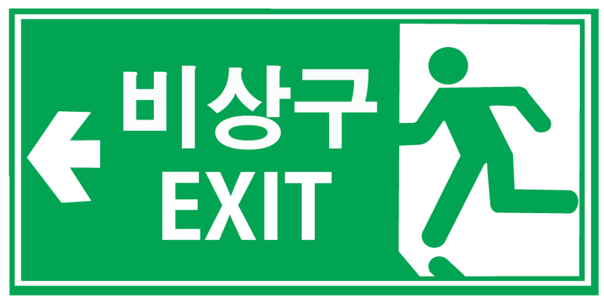

대설
대설이란?
대설이란 짧은 시간에 급격히 눈이 쌓이게 되므로 눈사태, 교통 혼잡, 쌓인눈으로 인한 시설물 붕괴 등의 피해
1.사전준비
1.내 지역의 정보는
가족이나 이웃과 함께 미리 확인
하고 공유합니다.
2.재난에 대한 위험정보를 수신할 수 있도록 가족이나 이웃과 함께 준비
합니다.
3.가족이나 이웃과 함께 사전에 누가 무엇을 어떻게 할 것이지 약속을 정합니다.
4.비상시 가족이나 이웃과 함께 안전한 이동방법, 대피요령
등을 자세히 알아둡니다.
2.대설 예보 시
1.산간 고립지역‧붕괴 위험시설물 등 위험지역에서는 주변에 있는
사람들과 함께 안전한 곳
으로 이동합니다.
2.주택이나 차량 등의 보호를 위해 사전에 어떻게 할지를 가족이나 이웃과 함께 대비
합니다.
3.비상용품 준비
등 재난 발생에 가족이나 이웃과 함께 대비합니다.
4.대설이 예보된 날은 외출을 자제
합니다.
3.대설 특보 시
1.내 집 앞, 내 점포 앞 보행로와 지붕 및 옥상에 내린 눈은
가족이나 이웃과 함께 치워
사고를 예방합니다.
2.출·퇴근을 평소보다 조금 일찍
하고, 자가용 대신 지하철, 버스 등 대중교통을 이용합니다.
3.외출 시에는 바닥면이 넓은 운동화나 등산화
를 착용하고, 주머니에 손을 넣지 말고 보온 장갑
등을 착용하여 체온을 유지합니다.
4.대설 후
1. 가족 및 지인의
안전 여부
를 주위 사람들과 함께 확인합니다.
2.대설 후, 한파가 이어져 빙판이 생길 수 있으니 외출 시 따뜻하게
옷을 입고 미끄럼에 주의
하도록 합니다.
3.파손된 사유시설을 보수 또는 복구할 때는 반드시 사진을 찍어 둡니다.
